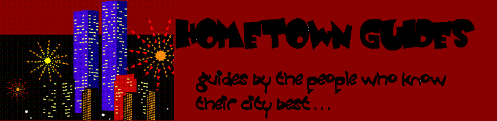

|  |
|
Welcome to the Hometown Guides! You can expect honest reviews by
real people. Choose one of our four featured cities and find
restaurants, attractions and outdoor activities that fit your budget
and lifestyle. | |
|
|
Austin
|

Tucson |
Seattle
|

Sacramento |
|
| An LBSC 690
Information Technology Project by Heather Jackson, Meredith Peck and
Rachel Telford |